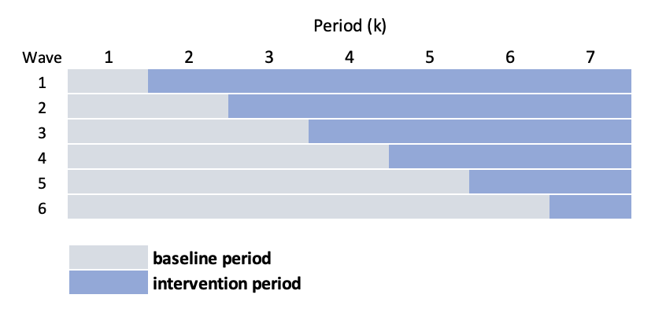
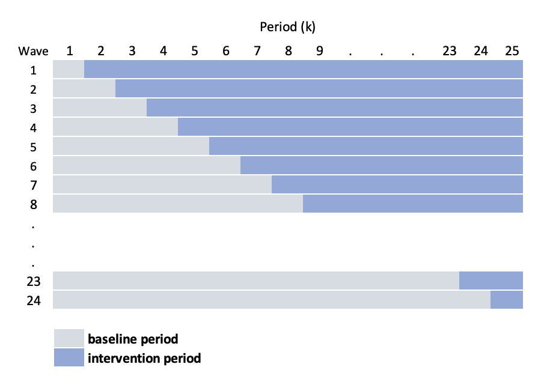

The stepped-wedge design
Stepped-wedge designs are a special class of cluster randomized trial where each cluster is observed in both treatment arms (as opposed to the classic parallel design where only some of the clusters receive the treatment). This is a special case of a cross-over design, where the cross-over is only in one direction: control (or pre-intervention) to intervention. I’ve written about this in a number of different contexts (for example, with respect to power analysis, complicated ICC patterns, using Bayesian models for estimation, open cohorts, and baseline measurements to improve efficiency), and I won’t give too much background.
In a typical stepped-wedge design (if there is such a thing), groups of sites (considered waves) is randomized to intervention starting times. For example, if there are 24 sites divided into 6 waves (so 4 sites per wave), there will be six starting times and 7 measurement periods (if we want to have at least one baseline/control period for each wave, and at least one intervention period per wave). Schematically, the design looks like this:

We could use a linear mixed effects model to estimate the intervention effect \(\delta\), which might look like this:
\[
Y_{ijk} = a_{j} + \beta_{k} + \delta A_{jk} + e_{ijk}
\]
where \(Y_{ijk}\) is the (continuous) outcome of individual \(i\) in cluster \(j\) during time period \(k\). \(a_j\) is the random intercept for site \(j\), and we assume that \(a_j \sim N(0, \sigma^2_a)\). \(A_{jk}\) is the intervention indicator for site \(j\) during time period \(k\). \(\beta_k\) is a period-specific effect. And \(e_{ijk}\) is the individual level effect.
In the study that is motivating all of this, the situation is different in a key way.The intervention can only be implemented at one site a time (so that the number of waves equals the number of sites), leading to this alternative schematic:

The challenge under this scenario, is that \(k\) (the number of periods) is starting to get quite large, requiring us to estimate a large number of period specific effects \(\beta_k\). In addition, the periods are actually shorter, so we have less information available to estimate those period effects. An alternative approach, as you may have anticipated, is to smooth the secular trend, using a model that looks like this:
\[
Y_{ijk} = a_{j} + s(k) + \delta A_{jk} + e_{ijk}
\]
where \(s(.)\) is a smooth function of time. And by using a smooth function, we can take this one step further and specify a site-specific smoothing function \(s_j(.)\):
\[
Y_{ijk} = a_{j} + s_j(k) + \delta A_{jk} + e_{ijk}
\]
So, we will use either splines or generalized additive models to estimate the curve, which will allow us to control for the period effect. By smoothing the function, we are assuming that the measurements closer in time are more highly correlated that measurements further apart.
Data generation process
Here is the data generation process that we will use to explore the different models:
\[
Y_{ijk} \sim N(\mu_{ijk}, \sigma^2 = 40) \\
\mu_{ijk} = a_{j} + b_{jk} + \delta A_{jk} \\
a_j \sim N(0, \sigma^2_a = 9) \\
b_{jk} \sim N(0, \Sigma_b) \\
\delta = 5\\
\]
In this data generation process, the time effect will not be explicitly smooth, but the underlying covariance structure used to generate the period effects will induce some level of smoothness. This is similar to what was described in the previous post. As in that earlier example, \(b_{jk}\) is a site-specific time period effect for each time period \(k\); the vector of cluster-time effects \(\mathbf{b_j} \sim N(0, \Sigma_b)\), where \(\Sigma_b = DRD\) is a \(25 \times 25\) covariance matrix based on a diagonal matrix \(D\) and an auto-regressive correlation structure \(R\):
\[
D = 4 * I_{25 \times 25}
\]
and
\[
R =\begin{bmatrix}
1 & \rho & \rho^2 & \dots & \rho^{24} \\
\rho & 1 & \rho & \dots & \rho^{23} \\
\rho^2 & \rho & 1 & \dots & \rho^{22} \\
\vdots & \vdots & \vdots & \vdots & \vdots \\
\rho^{24} & \rho^{23} & \rho^{22} & \dots & 1 \\
\end{bmatrix}, \ \ \rho = 0.6
\]
Now we are ready to implement this data generating process using simstudy. First the R packages that we will need:
library(simstudy)
library(ggplot2)
library(data.table)
library(mgcv)
library(lme4)
library(splines)
The data definitions for \(a_j\), \(b_{jk}\), and \(Y_{ijk}\) are established first:
def <- defData(varname = "a", formula = 0, variance = 9)
def <- defData(def, varname = "mu_b", formula = 0, dist = "nonrandom")
def <- defData(def, varname = "s2_b", formula = 16, dist = "nonrandom")
defOut <- defDataAdd(varname = "y", formula = "a + b + 5 * A", variance = 40)
Now, we generate 24 sites, create 25 periods for each site, generate the period-specific effects (\(b_{jk}\)) for each site, and assign the treatment status based on the stepped-wedge design:
set.seed(1234)
ds <- genData(24, def, id = "site")
ds <- addPeriods(ds, 25, "site", perName = "kk")
ds <- addCorGen(dtOld = ds, idvar = "site",
rho = 0.6, corstr = "ar1",
dist = "normal", param1 = "mu_b", param2 = "s2_b", cnames = "b")
ds <- trtStepWedge(ds, "site", nWaves = 24, lenWaves = 1, startPer = 1,
grpName = "A", perName = "kk")
ds$site <- as.factor(ds$site)
ds
## site kk a mu_b s2_b timeID b startTrt A
## 1: 1 0 -3.621197 0 16 1 -3.6889733 1 0
## 2: 1 1 -3.621197 0 16 2 -0.4945674 1 1
## 3: 1 2 -3.621197 0 16 3 3.5849760 1 1
## 4: 1 3 -3.621197 0 16 4 5.9131962 1 1
## 5: 1 4 -3.621197 0 16 5 1.7732310 1 1
## ---
## 596: 24 20 1.378768 0 16 596 -2.9569010 24 0
## 597: 24 21 1.378768 0 16 597 -2.4822812 24 0
## 598: 24 22 1.378768 0 16 598 5.8878746 24 0
## 599: 24 23 1.378768 0 16 599 8.6631430 24 0
## 600: 24 24 1.378768 0 16 600 -1.9344125 24 1
And finally, we generate 30 individuals per site per period. The figure shows the outcomes for all the sites overtime:
dd <- genCluster(ds, "timeID", numIndsVar = 30, level1ID = "id")
dd <- addColumns(defOut, dd)

Model estimation
GAM with site-specific smoother
gamfit <- gam(y ~ A + s(kk, site, bs = "fs", k = 10), data = dd)
summary(gamfit)
##
## Family: gaussian
## Link function: identity
##
## Formula:
## y ~ A + s(kk, site, bs = "fs", k = 10)
##
## Parametric coefficients:
## Estimate Std. Error t value Pr(>|t|)
## (Intercept) -0.2609 0.5883 -0.444 0.657
## A 4.7112 0.4107 11.472 <2e-16 ***
## ---
## Signif. codes: 0 '***' 0.001 '**' 0.01 '*' 0.05 '.' 0.1 ' ' 1
##
## Approximate significance of smooth terms:
## edf Ref.df F p-value
## s(kk,site) 230 239 33.13 <2e-16 ***
## ---
## Signif. codes: 0 '***' 0.001 '**' 0.01 '*' 0.05 '.' 0.1 ' ' 1
##
## R-sq.(adj) = 0.361 Deviance explained = 36.9%
## GCV = 43.886 Scale est. = 43.321 n = 18000

Mixed effects model with site-specific natural cubic spline
dd[, normk := (kk - min(kk))/(max(kk) - min(kk))]
knots <- c(.2, .4, .6, .8)
fitlme_s <- lmer(y ~ A + ( ns(normk, knots = knots) - 1 | site) , data = dd) # 4
summary(fitlme_s)
## Linear mixed model fit by REML ['lmerMod']
## Formula: y ~ A + (ns(normk, knots = knots) - 1 | site)
## Data: dd
##
## REML criterion at convergence: 121248.6
##
## Scaled residuals:
## Min 1Q Median 3Q Max
## -4.1473 -0.6741 0.0059 0.6718 4.1520
##
## Random effects:
## Groups Name Variance Std.Dev. Corr
## site ns(normk, knots = knots)1 41.67 6.455
## ns(normk, knots = knots)2 55.74 7.466 -0.01
## ns(normk, knots = knots)3 35.20 5.933 0.32 -0.46
## ns(normk, knots = knots)4 65.15 8.072 0.07 0.53 -0.35
## ns(normk, knots = knots)5 20.91 4.573 0.67 0.08 0.35 -0.09
## Residual 48.20 6.943
## Number of obs: 18000, groups: site, 24
##
## Fixed effects:
## Estimate Std. Error t value
## (Intercept) -1.9842 0.1868 -10.62
## A 5.1262 0.3046 16.83
##
## Correlation of Fixed Effects:
## (Intr)
## A -0.094

fitlme_k <- lmer(y ~ A + factor(kk) - 1 + (1|site) , data = dd)
summary(fitlme_k)
## Linear mixed model fit by REML ['lmerMod']
## Formula: y ~ A + factor(kk) - 1 + (1 | site)
## Data: dd
##
## REML criterion at convergence: 122676.6
##
## Scaled residuals:
## Min 1Q Median 3Q Max
## -4.3753 -0.6831 0.0021 0.6782 4.3469
##
## Random effects:
## Groups Name Variance Std.Dev.
## site (Intercept) 8.656 2.942
## Residual 53.071 7.285
## Number of obs: 18000, groups: site, 24
##
## Fixed effects:
## Estimate Std. Error t value
## A 5.44768 0.18771 29.022
## factor(kk)0 -1.72745 0.65908 -2.621
## factor(kk)1 -2.64486 0.65912 -4.013
## factor(kk)2 -1.07202 0.65926 -1.626
## factor(kk)3 0.85293 0.65949 1.293
## factor(kk)4 -0.46121 0.65982 -0.699
## factor(kk)5 0.23698 0.66024 0.359
## factor(kk)6 -0.36443 0.66074 -0.552
## factor(kk)7 0.01004 0.66135 0.015
## factor(kk)8 0.11976 0.66204 0.181
## factor(kk)9 -0.65182 0.66282 -0.983
## factor(kk)10 0.37542 0.66370 0.566
## factor(kk)11 0.39040 0.66467 0.587
## factor(kk)12 0.26334 0.66573 0.396
## factor(kk)13 1.48157 0.66687 2.222
## factor(kk)14 0.32006 0.66811 0.479
## factor(kk)15 -0.91115 0.66944 -1.361
## factor(kk)16 -0.91487 0.67085 -1.364
## factor(kk)17 -1.92077 0.67235 -2.857
## factor(kk)18 -1.86880 0.67394 -2.773
## factor(kk)19 -2.25838 0.67562 -3.343
## factor(kk)20 -1.13609 0.67738 -1.677
## factor(kk)21 -1.36548 0.67923 -2.010
## factor(kk)22 -0.91023 0.68117 -1.336
## factor(kk)23 -0.52221 0.68318 -0.764
## factor(kk)24 -1.00048 0.68529 -1.460
dres[, .(lmek = mean(est.lmek), lmes = mean(est.lmes), gam = mean(est.gam))]
## lmek lmes gam
## 1: 5.35507 5.260427 5.280913
dres[, .(lmek = mean(se.lmek), lmes = mean(se.lmes), gam = mean(se.gam))]
## lmek lmes gam
## 1: 0.18741 0.3039803 0.3055636
dres[, .(lmek = sd(est.lmek), lmes = sd(est.lmes), gam = sd(est.gam))]
## lmek lmes gam
## 1: 0.7960888 0.8607204 0.8716813